Actual offline diagnostic keyframes at clean final code e1c9dbc; source findings initially reviewed e04d5f6. NeonPhase2pilot visibility is now corrected; historical notes below describe the initial capture where stated. Placeholder/source review only. Production clips0; animated transformations0/12; bespoke terminal animations0/12. Camera-only boss framing used for distant route bosses. Full findings and terminal recommendations
Tidebreak Marina · Phase 1
Fat Head Dave · Breakwater Tug
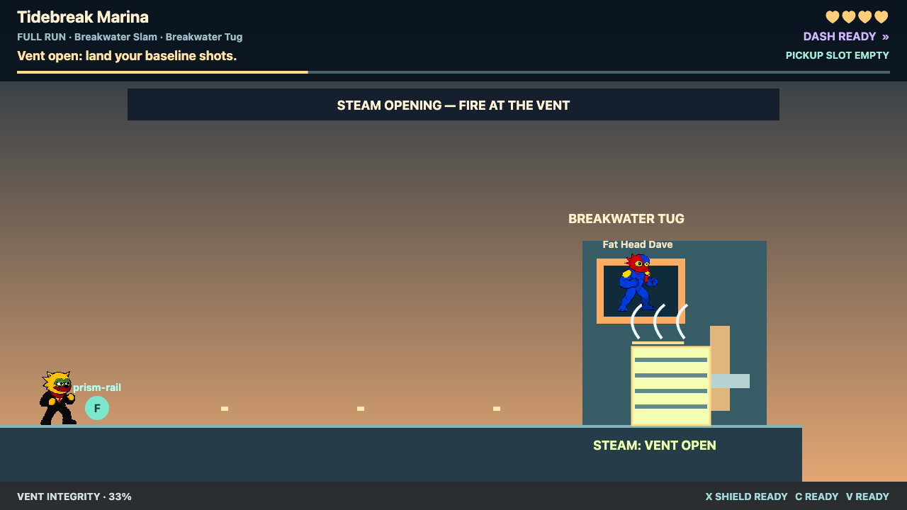
Piston length changes discretely; vent fill/steam linework exposes the opening. Wake warning and release are separate hazard states. Pilot sprite stays in wheelhouse; no throttle-pull articulation.
Critical poses: Throttle reach → piston hang at60 → strike120 → steam180 → recoil/relock390. Ease the piston between poses without moving the low32px wake collision.
Tidebreak Marina · Phase 2
Fat Head Dave · Dry Dock Press
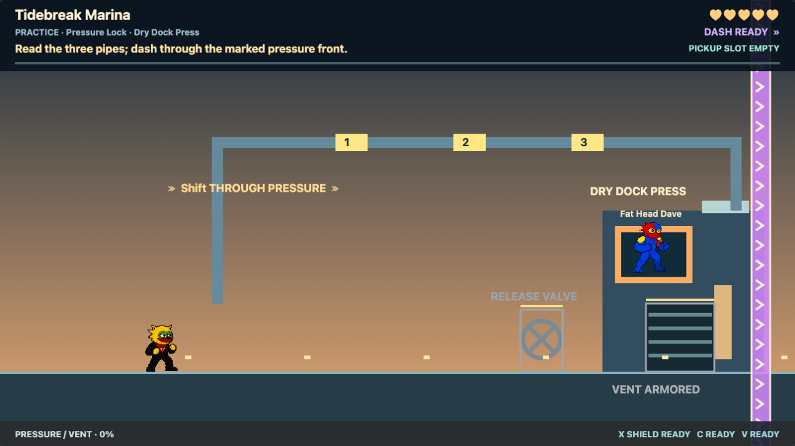
Pipe lights sequence and valve/vent color states are visible. Press, pipes and valve wheel are otherwise rigid; the pressure front supplies motion. Pilot remains the same fixed sprite.
Critical poses: Pipe1/2/3 light → locked pressure hold → front release → valve-wheel turn only after counter → steam vent open. Keep wheelhouse/piston through docking.
Last Light Bar · Phase 1
Morelight · Prism Projector
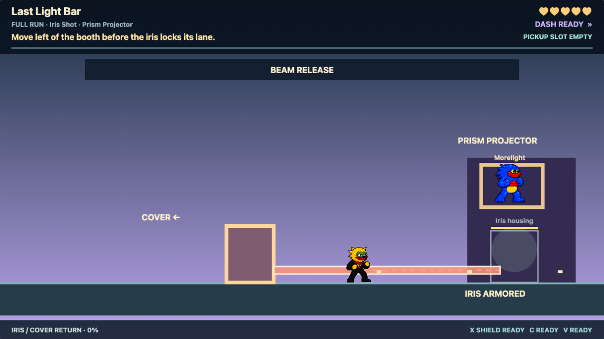
Iris changes fill state and a dashed line records the locked lane. Booth and projector are static. No animated lens narrowing or pilot lens control is present.
Critical poses: Lens narrow60 → lane lock → beam120 → recoil/open iris210ticks → iris close. Keep booth sightline geometric, not an oversized flare.
Last Light Bar · Phase 2
Morelight · Mirror Gantry
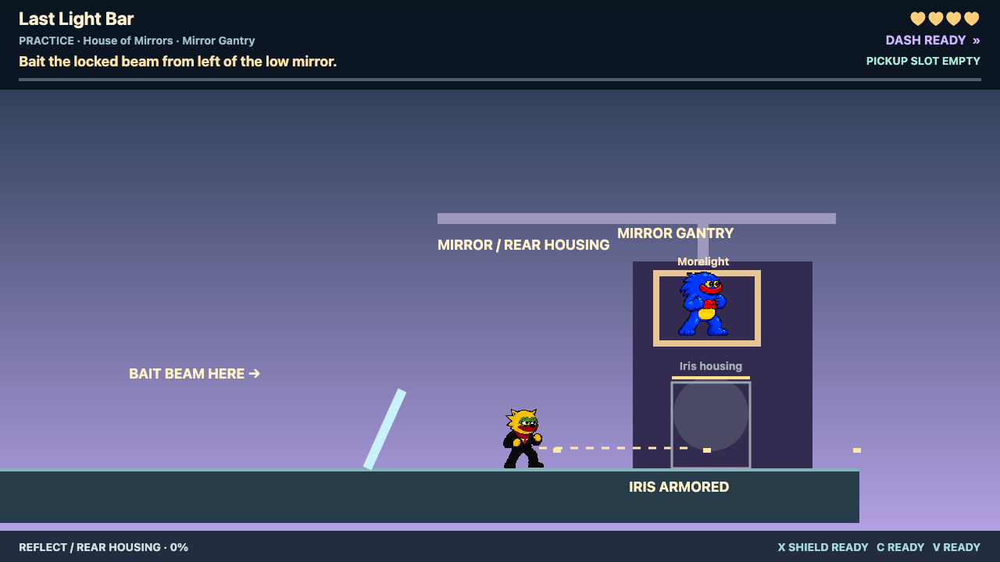
New rail/mirror silhouette and24tick reflected ray distinguish the phase. Mirror angle and gantry are static; no actual swing or overhead lift sequence.
Critical poses: Mirror swing/stop before aim → locked incident ray → reflection flash → rear housing open → recovery. Separate reflected beam from player muzzle and housing glow.
Mudline Trenches · Phase 1
Crapto · Sludge Dredger
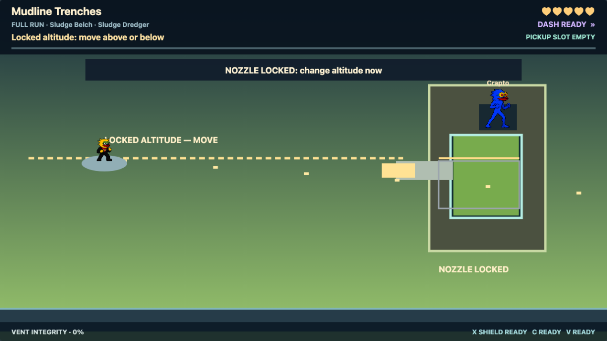
Glass fill rises and committed-altitude line appears; nozzle body changes tint, then an ordinary projectile moves left. Pilot is visible but does not pull a firing control.
Critical poses: Belly fill0–89 → nozzle altitude lock90 → belch145 → vent steam155–299 → reseal300. Pivot nozzle toward locked altitude before release.
Mudline Trenches · Phase 2
Crapto · Floodgate Pump
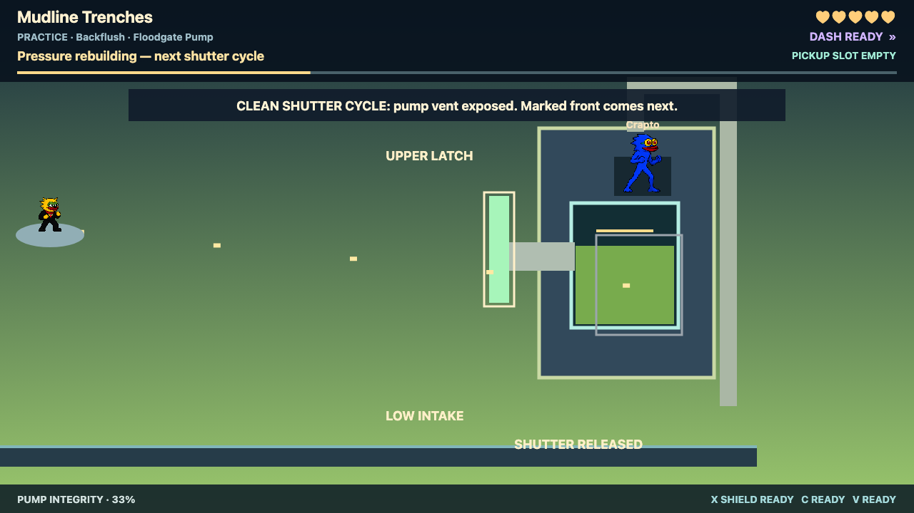
Upper/lower route targets, shutter status and marked front are visible. Pipe drain and shutter physical travel are not articulated; colored rectangles represent state.
Critical poses: Pipe drain to selected shutter → upper latch release OR lower intake bounce impact → shutter slide → front windup90 → counter overload → glass vent expose180.
Sproto Ranch · Phase 1
Halloween 2008 · Lantern Harvester
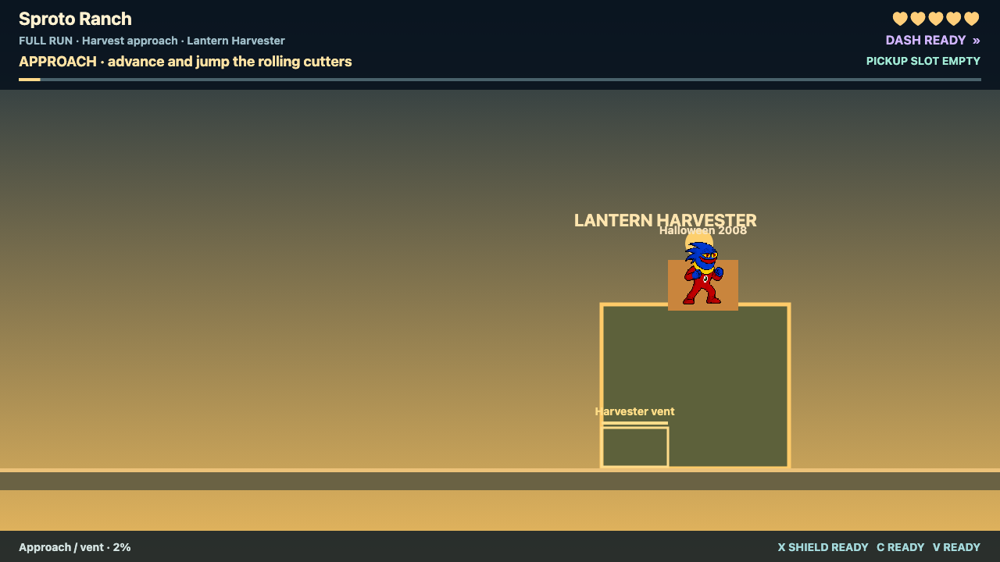
Lantern bobs on a decorative sine independent of roller windup. Harvester and pilot are far down-route and absent in early normal camera samples; diagnostic boss framing confirms silhouette only.
Critical poses: Lantern deliberate swing → cutter rattle55 → roller release → cutter spin-down → vent recoil. Tie lantern extremes to the actual attack, not continuous bob.
Sproto Ranch · Phase 2
Halloween 2008 · Harvest Express
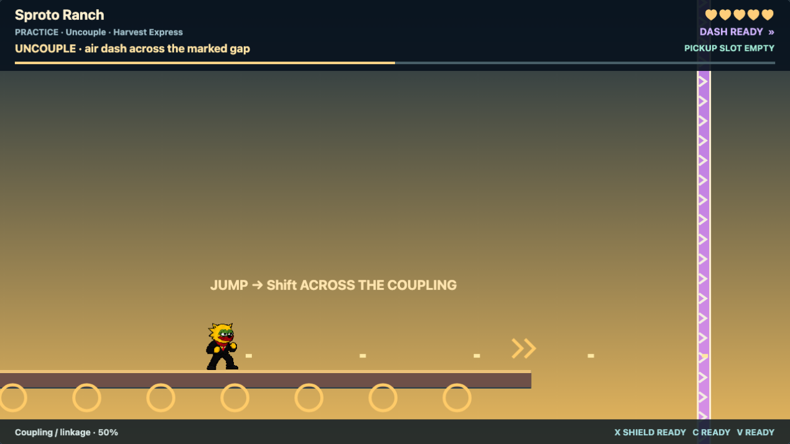
Cars/platforms and engine translate0.6px/tick. Coupling gap exists on entry; chain pull and uncoupling are not animated. Lantern retains its unrelated bob.
Critical poses: Pilot chain pull → coupling stretch/unlatch → separate cars → marked launch hold → linkage reveal after dash → engine recoil. Keep launch edges attached to moving cars.
Neon Tomorrow · Phase 1
Collector · Salvage Strider
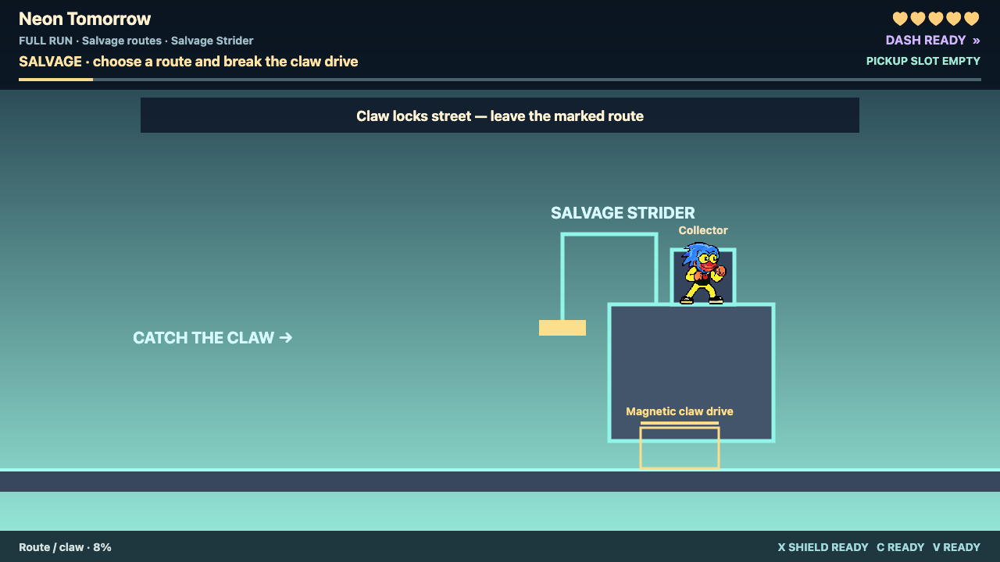
Authored auto-scroll and lane hazard move. Crane/claw silhouette is rigid, at far-route x4800 and outside early play samples; diagnostic framing confirms the distant cockpit.
Critical poses: Collector winch crank → claw lock street/upper lane65 → magnet pulse → scrap drag150 → release30. Use claw pose, not only text, to commit the route.
Neon Tomorrow · Phase 2
Collector · Billboard Rig
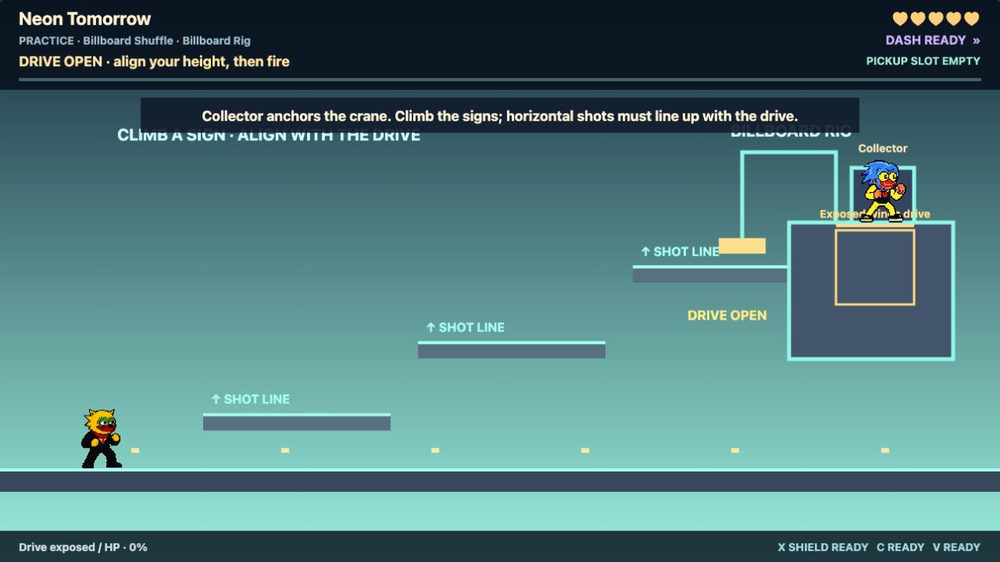
Signs move vertically and exposure toggles. Winch/claw remain rigid. Historical initial sample showed cockpit/title HUD overlap. Final e1c9dbc capture corrects pilot/cab visibility (sprite top205); title/drive-label cosmetic hierarchy remains.
Critical poses: Winch turn → sign elevation shift → drive cover open80–260 → latch/recovery. Move final cockpit silhouette/labels into safe region; preserve exact platform tops.
Circuit Gate · Phase 1
Bongraker · Relay Walker
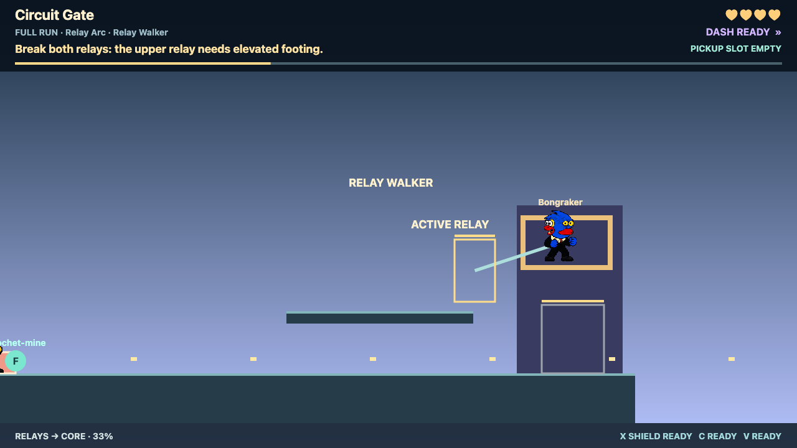
A charge dot traverses the visible cable while low arc becomes active. Relay state and core exposure are explicit. Walker legs and operator remain static.
Critical poses: Operator relay throw → cable charge60 → arc discharge → cable cool → relay break → core iris open after both nodes. Give the cable dot a matching hand action.
Circuit Gate · Phase 2
Bongraker · Gate Spider
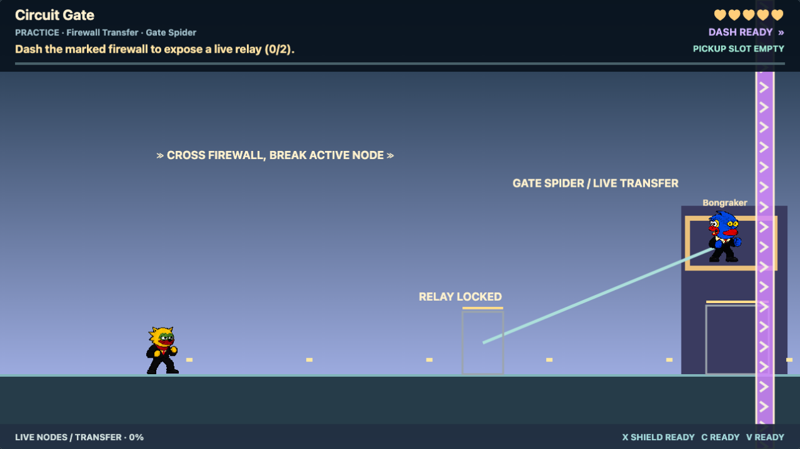
Dash front and live relay states convey transfer, but the Spider silhouette is the same rigid cabinet; there is no folding leg deployment or node-travel animation.
Critical poses: Cockpit fold → cable tension → firewall charge90 → transfer release → live-node190tick window → reset recovery. Distinguish active node from exposed core.
Moonkeep Castle · Phase 1
Big Swole · Siege Dragon
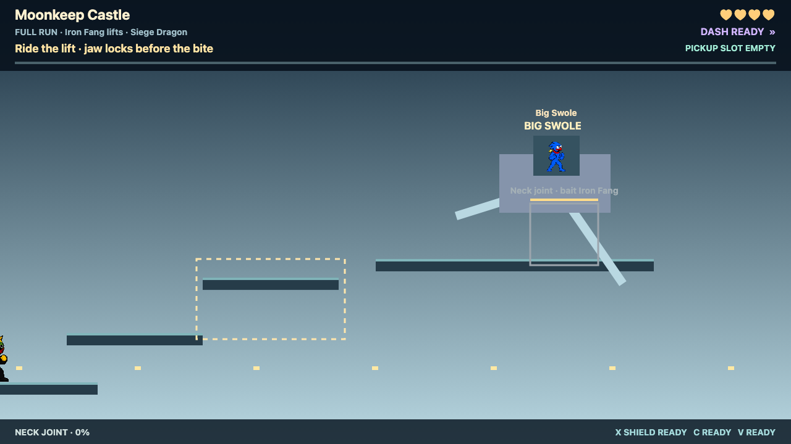
Lift moves and dragon neck endpoint follows a continuous sine. Bite hazard is positioned at the player, not matched by a jaw strike. Pilot is seated but has no control action.
Critical poses: Jaw ratchet60 → neck coil → committed bite18 → joint withdrawal/open138–234 → recovery. Art jaw trajectory must follow actual bite box or collision must be reapproved.
Moonkeep Castle · Phase 2
Big Swole · Rampart Dragon
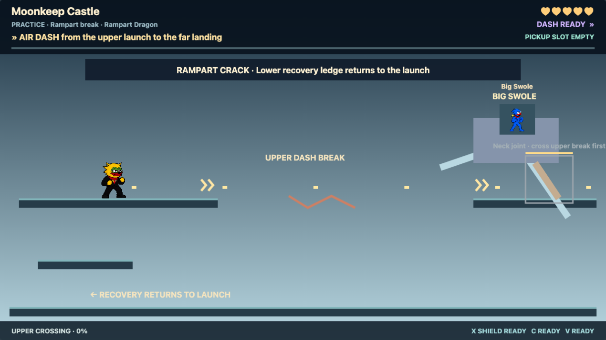
Added anchor leg and crack lines distinguish phase; disabled bridge is already absent. Tail windup and stone collapse are not animated; neck keeps unrelated sine motion.
Critical poses: Rear feet clamp → tail windup → numbered cracks → stone break/drop → upper crossing hold → joint expose. Keep recovery route visible throughout collapse.
Crown Relay Chamber · Phase 1
Alpha 777 · Jackpot Knight
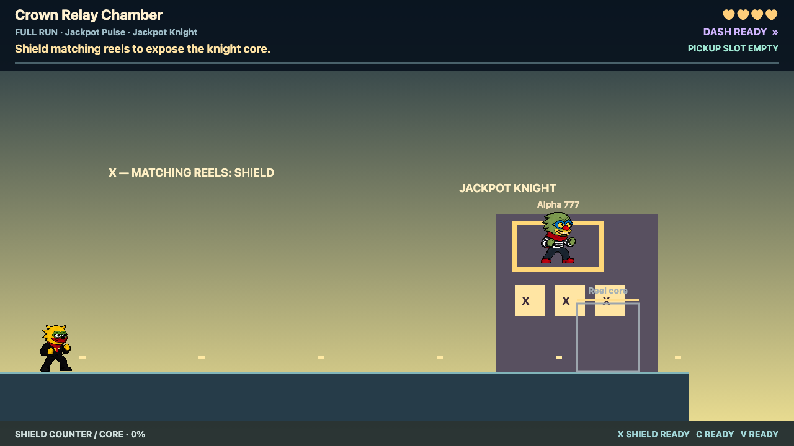
Three reel boxes light in sequence30/55/80 and show X. The symbols do not spin or physically stop; pilot, body and pulse emitter are static.
Critical poses: Reel1 brake30 → reel2 brake55 → reel3 brake80/chime → shield pulse120 → block stagger → core open210. Preserve X shape independently of color.
Crown Relay Chamber · Phase 2
Alpha 777 · Crown Joust Rig
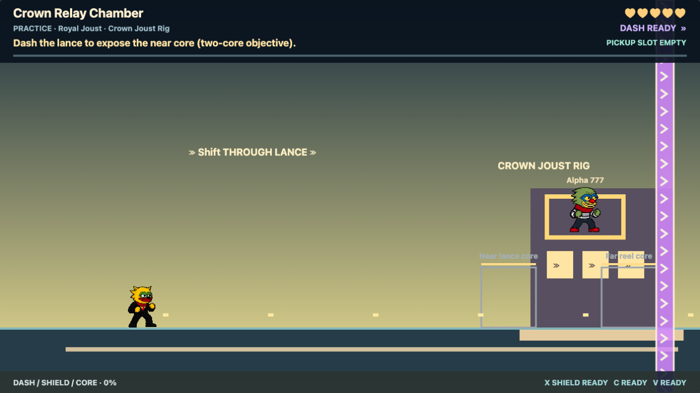
Rail and sled are drawn, plus alternating chevron/X cues. Sled does not recoil or joust along the rail; no lance drops, though typed fronts move correctly.
Critical poses: Sled preload recoil → lance lower → chevron charge → dash-only release → near-core recovery; alternate with original reel braking and far-core shield opening.
The Hatchery · Phase 1
High Sproto · Incubator Crane
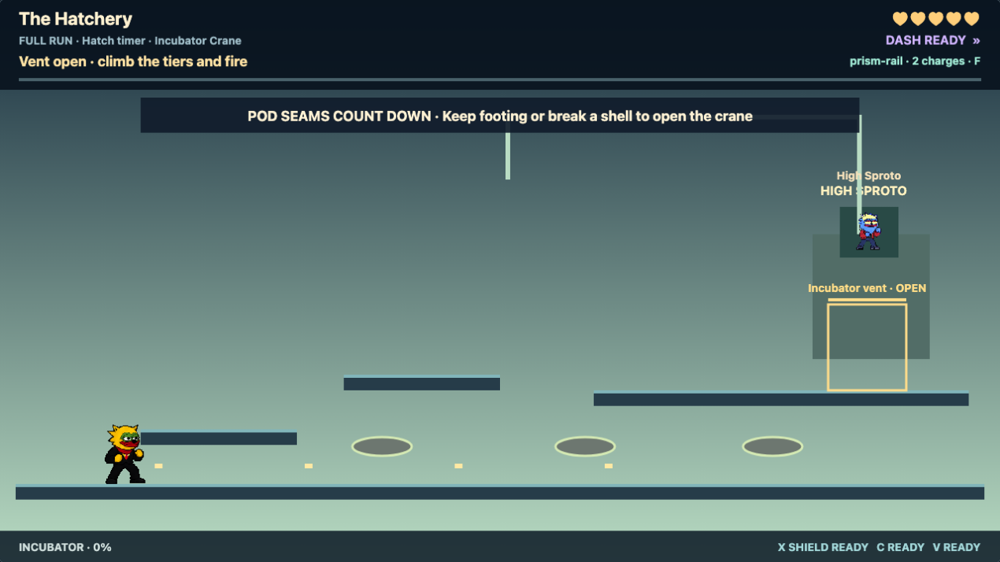
Pod seam/countdown and shell-vs-broken ellipse states are present. First hatch occurs300, beyond requested240tick sample range; hatch timing is source-verified only. Crane/claw stays rigid.
Critical poses: Claw settle pod → seam tension/countdown → shell crack → hatch release → lost footing marker → crane vent open. Align shell collapse exactly with platform disable.
The Hatchery · Phase 2
High Sproto · Brood Crawler
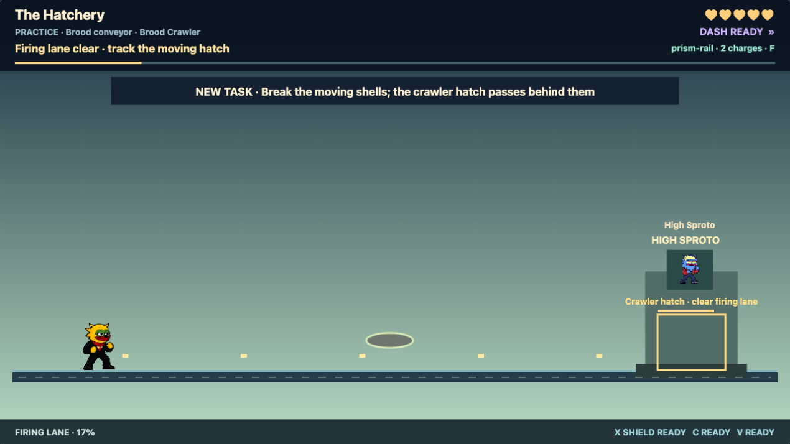
Pods translate and crawler hatch/cab oscillates horizontally. Pilot follows core x. Tracks and hatch do not articulate; shell destruction is a state pop.
Critical poses: Track roll → conveyor index → shell hit/squash → shell break → hatch pass/open → brood release → recoil. Keep firing lane and shell occlusion truthful.
Verse Gate · Phase 1
Bot Sales · Sales Carrier
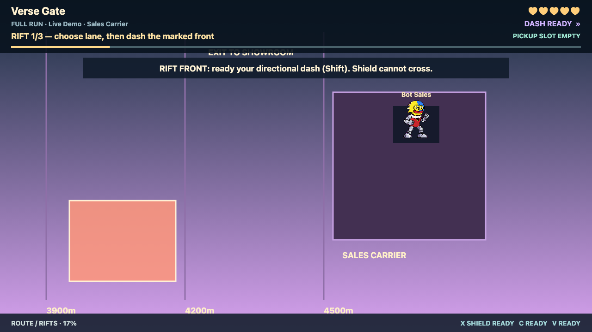
Route drift, debris and marked rifts move in play. SalesCarrier remains far down-route in early samples; diagnostic framing confirms rigid carrier/cabin with no drone unfold articulation.
Critical poses: Module door open → drone unfold → aim lock50 → rift projector release → recoil/close. Cabin and exposed emitter must share a visible source anchor.
Verse Gate · Phase 2
Bot Sales · Orbital Showroom
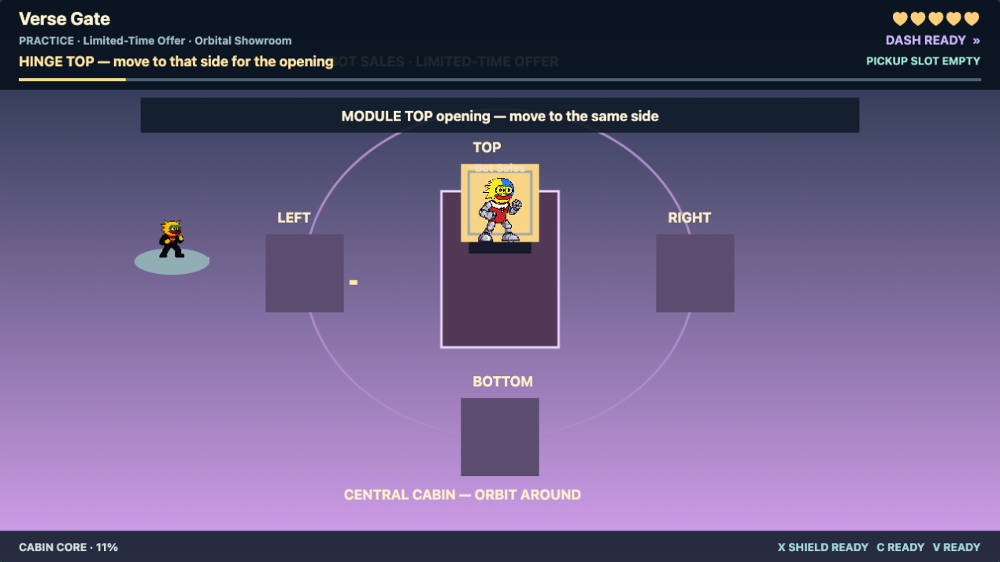
Exposure jumps between four fixed module positions each120ticks, with side-dependent target openings. Top target is now below cue; at120 it visually overlaps the pilot/cabin, risking weak-point ambiguity. Modules do not hinge.
Critical poses: Left/top/right/bottom hinge anticipation → exposed face → recoil → close; center-lane opening420–464 needs physical split. Keep target separate from operator silhouette.
Rooftop Breakaway · Phase 1
Goldie · Pursuit Jetpack
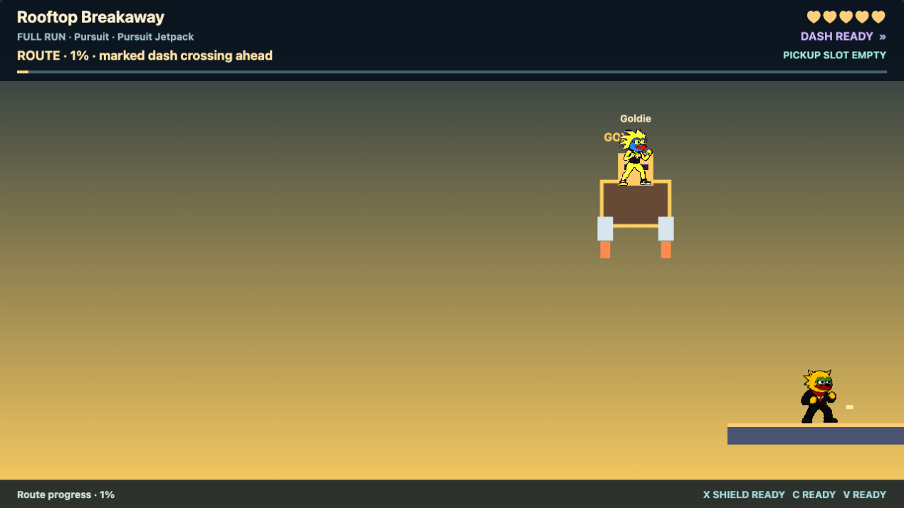
Jetpack and Goldie bob together with constant exhaust. At normal opening x130, pursuer is x−130 and offscreen; diagnostic framing reveals the silhouette. Arm aim/nozzle tilt are not articulated.
Critical poses: Nozzle tilt → arm aim48 → afterburner burst → thrust recoil → controlled bank recovery. Sync flame pulse to actual shot release rather than static rectangles.
Rooftop Breakaway · Phase 2
Goldie · Intercept Glider
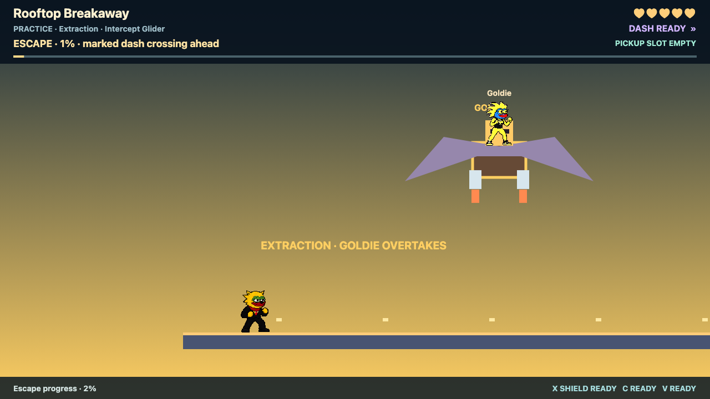
Glider wings are already fully deployed on entry and entire assembly bobs. Pilot tracks cockpit. No overtaking bank or intercept arm action beyond moving projectile/cue.
Critical poses: Wing unfold → overtake bank → nozzle correction → intercept aim48 → cutoff shot → missed-pass recovery. Keep wing silhouette out of launch/landing cue.
Codebreak Ascent · Phase 1
Bitcoin Sheriff · Warrant Rig
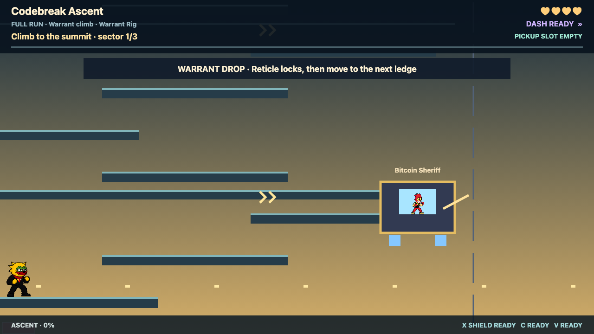
Rig follows climb and flame height/arm endpoint oscillate. Reticle/drop hazard cues are authored separately, but arm does not actually aim/lock to the reticle position. Pilot follows pursuing cab.
Critical poses: Rocket lift/bank → reticle arm unfold → left/right lock65 → warrant stamp/drop → arm recoil/retract. Keep reticle distinct from projectile hit area.
Codebreak Ascent · Phase 2
Bitcoin Sheriff · Summit Lockdown
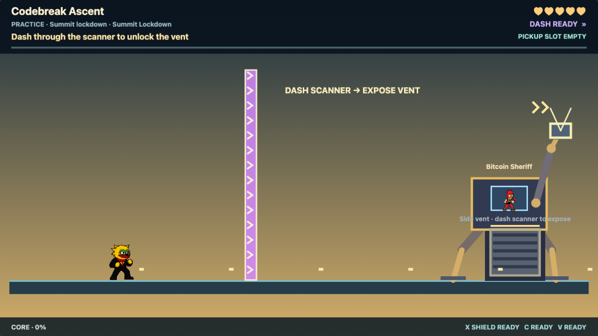
Actual samples show cabin settled and emitter unfolds; pure fixed-tick pose provides planted feet, jointed arm, release recoil and vent shutter articulation. Pilot follows cab. Counter-open/hit reactions are source-verified; neutral samples do not earn them.
Critical poses: Approach compression0–75 → anchor → unfold55 → lock20 → release140 → retract55 → recovery; counter overload → shutter18 → real target-hit flinch. Hold feet atfloor600 and vent rectangle1050,490,105,100.